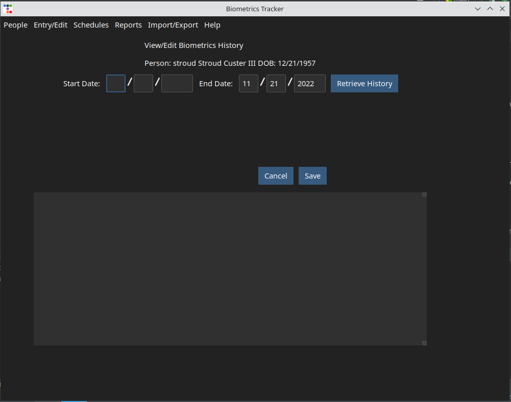
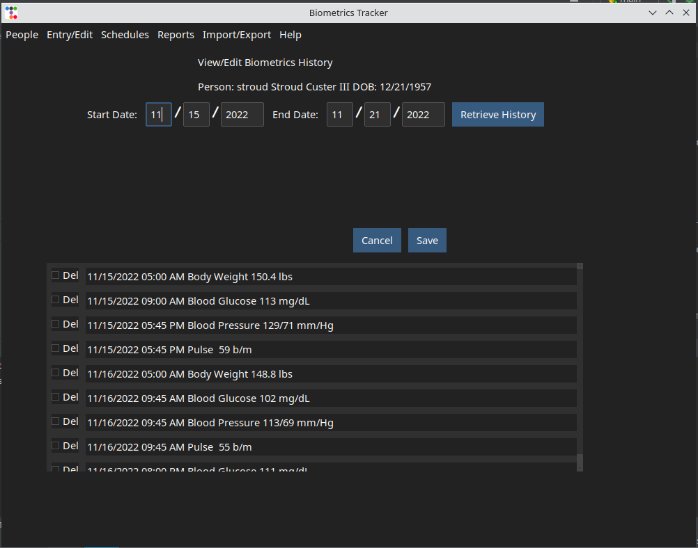

The initial entry of data points is done in one of two ways; by selecting the option from the menu, or by using the Scheduling function to prompt you for the information at preset times. The GUI is shown below. It allows you to enter a number of data points for a given date and time.
The Scheduled Entry GUI is very similar to this GUI, except it prompts for a single metric, depending on the metric type in the schedule that triggered the prompt.
This function allows you to view and edit the data points you've previously entered. If you are tracking more than one person, you will be prompted to select the person whose history you want to retrieve. Then you will be prompted for and of the time period you want to work with.
After you have entered some data points as described above, you can view or edit them by selecting the option on the menu. If you are tracking more than one person, you will be prompted to select the person whose history you want to retrieve, then the window show below will be displayed
Enter the and for the period you wish to work with, then click the button. A list of data points similar to the one shown below will be presented. You can use the scroll bar at the right side of the list to scroll through the data points.
If you want to change the value of a data point, double-click on it's list entry. The data point's date, time, value and note will be displayed above the list of data points, and the background color of the list entry you clicked will be changed to blue.
You can change any of this information, then click the button. The list of points will be refreshed with the changed information.
The check boxes label allow you to delete data points. Click the check box for the entries you want to delete, then click the button. The list will be updated to reflect the deletions.
If you want to exit the GUI without saving any changes you may have made, click the button.